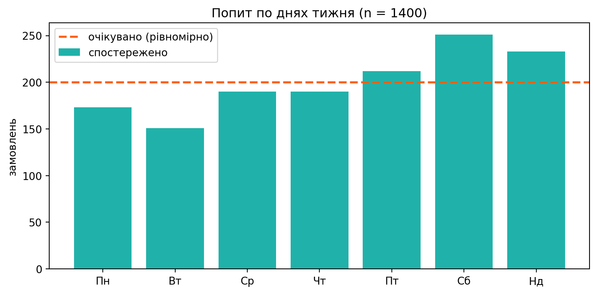
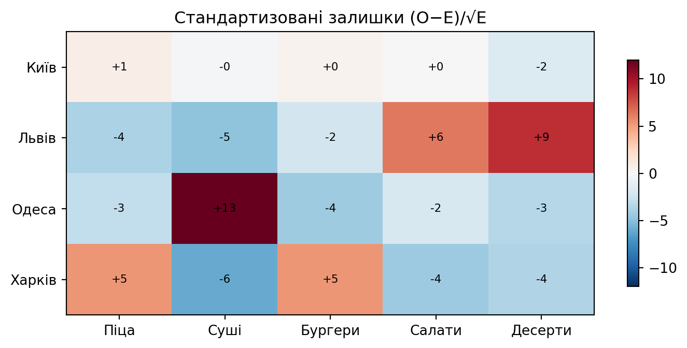
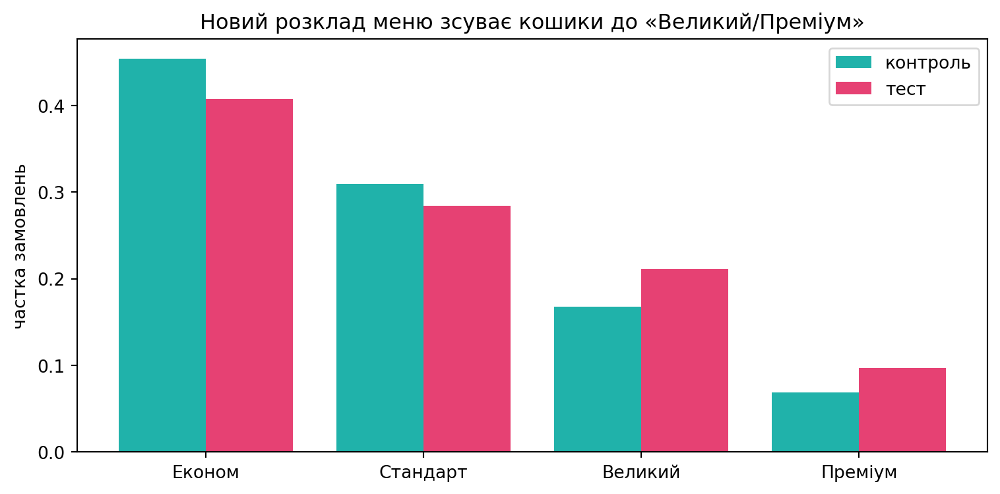

DAYS = ["Пн", "Вт", "Ср", "Чт", "Пт", "Сб", "Нд"]
CUISINES = ["Піца", "Суші", "Бургери", "Салати", "Десерти"]
CITIES = ["Київ", "Львів", "Одеса", "Харків"]
def order_counts(probs, n, seed=None):
"""n замовлень, розкиданих по категоріях із імовірностями probs."""
probs = np.asarray(probs, float)
probs = probs / probs.sum()
return np.random.default_rng(seed).multinomial(n, probs)Практика 7
χ²-тести для категоріальних даних
Що ми робимо сьогодні
Минулі практики працювали з числовими метриками (ARPU, час до події). Але половина продуктових даних — це підрахунки за категоріями: день тижня, обрана кухня, місто, «конвертувався / ні». Сьогодні — інструмент саме для такого, і всі його різновиди зводяться до однієї статистики:
\[ \tau = \sum_{\text{клітинки}} \frac{(O - E)^2}{E}, \]
де \(O\) — спостережені частоти, \(E\) — очікувані за гіпотезою.
Ми будуємо гардрейли для категоріальних A/B та аналітики застосунку доставки GreenBowl (той самий, що в Практиках 4–6) і відповідаємо на чотири прикладні питання:
- Чи рівномірний попит по днях тижня (планування змін кухарів)?
- Чи залежить вибір кухні від міста (асортимент під регіон)?
- Чи змінив A/B-редизайн меню розподіл замовлень по категоріях?
- Чи спрацював промо-пілот у новому місті на малій вибірці?
1 Кейс: категоріальні дані GreenBowl
Усі дані ми генеруємо самі — так ми завжди знаємо «правду» і можемо перевірити, чи критерій її ловить. Базові категорії:
Одна функція order_counts — наш «генератор логів»: ми задаємо справжні ймовірності категорій, а вона повертає спостережені частоти.
2 Частина I — Goodness-of-fit: чи рівномірний попит?
Кейс. Операційний менеджер ставить однакову кількість кухарів на кожен день тижня. Аналітик підозрює, що попит нерівномірний, і зміни треба перерозподілити. За тиждень — 1400 замовлень.
2.1 Версія 1 — вердикт узгодженості
def gof_test(observed, p0=None, alpha=0.05):
"""Версія 1. χ²-критерій узгодженості.
observed --- спостережені частоти за k категоріями.
p0 --- очікувані ймовірності (None → рівномірний розподіл).
"""
observed = np.asarray(observed, float)
n, k = observed.sum(), len(observed)
if p0 is None:
p0 = np.full(k, 1 / k)
expected = n * np.asarray(p0, float)
res = chisquare(observed, f_exp=expected)
verdict = ("⛔ відхиляємо H0 → розподіл НЕ такий, як гадали"
if res.pvalue <= alpha else
"✅ не відхиляємо H0 → дані узгоджуються з гіпотезою")
return {"chi2": res.statistic, "df": k - 1, "p": res.pvalue,
"min_expected": expected.min(), "verdict": verdict}Застосуємо до попиту по днях. H0: попит рівномірний (по \(1/7\) на день).
orders = order_counts([0.13, 0.12, 0.13, 0.13, 0.15, 0.18, 0.16],
n=1400, seed=7)
r = gof_test(orders) # p0=None → перевіряємо рівномірність
print("Замовлень по днях:", dict(zip(DAYS, orders)))
print(f"χ² = {r['chi2']:.2f}, df = {r['df']}, p = {r['p']:.4f}")
print(r["verdict"])
fig, ax = plt.subplots(figsize=(8, 4))
ax.bar(DAYS, orders, color=turquoise, label="спостережено")
ax.axhline(orders.mean(), color=red, ls="--", lw=2,
label="очікувано (рівномірно)")
ax.set_ylabel("замовлень"); ax.set_title("Попит по днях тижня (n = 1400)")
ax.legend()
plt.tight_layout()
plt.show()Замовлень по днях: {'Пн': np.int64(173), 'Вт': np.int64(151), 'Ср': np.int64(190), 'Чт': np.int64(190), 'Пт': np.int64(212), 'Сб': np.int64(251), 'Нд': np.int64(233)}
χ² = 35.82, df = 6, p = 0.0000
⛔ відхиляємо H0 → розподіл НЕ такий, як гадали
Сплеск п’ятниця–субота-неділя «перетягує» статистику: \(p < 0{,}05\), попит не рівномірний. Рекомендація операційці: підсилити зміни на вихідні.
3 Правило очікуваних частот — і чому воно існує
χ² спирається на нормальне наближення (ЦГТ), яке ламається на рідкісних категоріях. Правило: кожна очікувана частота \(E_i \ge 5\). Перевіримо це не на віру, а Монте-Карло: чи тримає критерій 5% хибних спрацювань, коли одна категорія дуже рідкісна?
def gof_fpr(probs, n, n_exps=4000, seed=73):
"""FPR критерію узгодженості під H0 (дані з тих самих probs)."""
rng = np.random.default_rng(seed)
expected = n * np.asarray(probs, float)
rej = sum(chisquare(rng.multinomial(n, probs), f_exp=expected).pvalue < 0.05
for _ in range(n_exps))
lo, hi = proportion_confint(rej, n_exps, alpha=0.05, method="wilson")
return {"fpr": rej / n_exps, "ci": (lo, hi), "min_expected": expected.min()}
healthy = [0.20, 0.20, 0.20, 0.20, 0.20] # усі категорії «жирні»
rare = [0.485, 0.485, 0.01, 0.01, 0.01] # три рідкісні категорії
for probs, name in [(healthy, "здорові категорії"), (rare, "є рідкісні")]:
r = gof_fpr(probs, n=60)
print(f"{name:18s}: FPR={r['fpr']:.3f} "
f"CI=({r['ci'][0]:.3f},{r['ci'][1]:.3f}) "
f"E_min={r['min_expected']:.1f}")здорові категорії : FPR=0.050 CI=(0.043,0.057) E_min=12.0
є рідкісні : FPR=0.081 CI=(0.073,0.090) E_min=0.64 Частина II — Незалежність: кухня × місто
Кейс. Продакт хоче знати, чи варто локалізувати асортимент: чи залежить вибір кухні від міста? Якщо ні — одне меню на всіх; якщо так — регіональні підбірки.
Тепер дві категоріальні змінні на тих самих замовленнях → таблиця спряженості. Згенеруємо логи, де кухня залежить від міста:
def cuisine_city_table(seed=7):
rng = np.random.default_rng(seed)
base = np.array([0.30, 0.20, 0.25, 0.15, 0.10]) # Піца…Десерти
mods = { # смаки міст
0: [1.0, 1.0, 1.0, 1.0, 1.0], # Київ — як «база»
1: [0.8, 0.7, 0.9, 1.4, 1.6], # Львів — салати/десерти
2: [0.9, 1.8, 0.8, 1.0, 0.9], # Одеса — суші
3: [1.3, 0.7, 1.4, 0.8, 0.8], # Харків — піца/бургери
}
nper = [2500, 1800, 1500, 2000]
rows = [rng.multinomial(nper[c], base * np.array(mods[c]) /
(base * np.array(mods[c])).sum()) for c in range(4)]
return np.array(rows)
table = cuisine_city_table()
print(" " + " ".join(f"{c:>7s}" for c in CUISINES))
for city, row in zip(CITIES, table):
print(f"{city:>7s} " + " ".join(f"{v:>7d}" for v in row)) Піца Суші Бургери Салати Десерти
Київ 749 486 649 389 227
Львів 438 264 413 384 301
Одеса 375 511 301 203 110
Харків 710 274 632 233 1514.1 Версія 2 — вердикт асоціації
def assoc_test(table, alpha=0.05):
"""Версія 2. χ²-критерій незалежності / однорідності для таблиці."""
table = np.asarray(table, float)
chi2_stat, p, dof, expected = chi2_contingency(table)
verdict = ("⛔ відхиляємо незалежність → змінні ПОВ'ЯЗАНІ"
if p <= alpha else
"✅ не відхиляємо → зв'язку не видно")
return {"chi2": chi2_stat, "df": dof, "p": p,
"min_expected": expected.min(), "expected": expected,
"verdict": verdict}r = assoc_test(table)
print(f"χ² = {r['chi2']:.0f}, df = {r['df']}, p = {r['p']:.2g}")
print(f"E_min = {r['min_expected']:.0f} (правило ≥5 виконано)")
print(r["verdict"])
# Де саме зв'язок? — стандартизовані залишки (O−E)/√E
resid = (table - r["expected"]) / np.sqrt(r["expected"])
fig, ax = plt.subplots(figsize=(7.5, 3.6))
im = ax.imshow(resid, cmap="RdBu_r", vmin=-12, vmax=12, aspect="auto")
ax.set_xticks(range(5)); ax.set_xticklabels(CUISINES)
ax.set_yticks(range(4)); ax.set_yticklabels(CITIES)
ax.set_title("Стандартизовані залишки (O−E)/√E")
for i in range(4):
for j in range(5):
ax.text(j, i, f"{resid[i, j]:+.0f}", ha="center", va="center",
fontsize=8, color="black")
fig.colorbar(im, ax=ax, shrink=0.8)
plt.tight_layout()
plt.show()χ² = 487, df = 12, p = 1.3e-96
E_min = 152 (правило ≥5 виконано)
⛔ відхиляємо незалежність → змінні ПОВ'ЯЗАНІ
\(p \approx 0\) → кухня залежить від міста. Але χ² каже лише «так/ні». Карта залишків показує де: Одеса — червоне на «Суші», Львів — на «Десертах/Салатах», Харків — на «Піці/Бургерах». Це вже готова підказка для локалізації меню.
5 Великі дані: значущо ≠ сильно (Cramér’s V)
На великих \(n\) \(p\)-value майже завжди мізерний — значущість гарантована й нічого не каже про силу зв’язку. Потрібен розмір ефекту: Cramér’s V.
5.1 Версія 3 — асоціація + сила ефекту
def assoc_report(table, alpha=0.05):
"""Версія 3. assoc_test + Cramér's V та словесна сила зв'язку."""
r = assoc_test(table, alpha) # ← перевикористали Версію 2
table = np.asarray(table, float)
n = table.sum()
V = np.sqrt(r["chi2"] / (n * (min(table.shape) - 1)))
strength = ("практично відсутній" if V < 0.1 else
"слабкий" if V < 0.2 else
"помірний" if V < 0.4 else "сильний")
r.update({"n": int(n), "cramer_v": V, "strength": strength})
return rr = assoc_report(table)
print(f"Кухня × місто: n={r['n']}, p={r['p']:.2g}, "
f"Cramér's V={r['cramer_v']:.3f} → зв'язок {r['strength']}")Кухня × місто: n=7800, p=1.3e-96, Cramér's V=0.144 → зв'язок слабкийТепер — пастка великих даних. Уявімо, що ми порівнюємо частку повторних замовлень у двох когортах по мільйону користувачів кожна, де реальна різниця — лише \(50\%\) проти \(51\%\):
rng = np.random.default_rng(1)
big = np.array([rng.multinomial(1_000_000, [0.50, 0.50]),
rng.multinomial(1_000_000, [0.49, 0.51])])
r = assoc_report(big)
print(f"Мега-таблиця: n={r['n']:,}")
print(f" p = {r['p']:.2g} → {r['verdict']}")
print(f" Cramér's V = {r['cramer_v']:.4f} → зв'язок {r['strength']}")Мега-таблиця: n=2,000,000
p = 3.8e-50 → ⛔ відхиляємо незалежність → змінні ПОВ'ЯЗАНІ
Cramér's V = 0.0105 → зв'язок практично відсутній6 Частина III — Однорідність: A/B меню
Кейс. A/B-тест нового розкладу меню. Контроль бачить старий, тест — новий. Для кожного замовлення фіксуємо категорію кошика: Економ / Стандарт / Великий / Преміум. Чи змінив редизайн розподіл по категоріях?
Ключова ідея лекції: якщо вважати групу (тест/контроль) другою змінною, таблиця однорідності — це звичайна таблиця спряженості. Тож той самий assoc_report працює без змін.
rng = np.random.default_rng(11)
basket_p = [0.45, 0.30, 0.18, 0.07] # Економ/Стандарт/Великий/Преміум
N = 6000
cats = rng.choice(4, size=N, p=basket_p)
perm = rng.permutation(N)
A = np.bincount(cats[perm[:N // 2]], minlength=4) # чесний випадковий поділ
B = np.bincount(cats[perm[N // 2:]], minlength=4)
r = assoc_report(np.array([A, B]))
print("A/A (немає ефекту):", r["verdict"], f"(p={r['p']:.3f})")A/A (немає ефекту): ✅ не відхиляємо → зв'язку не видно (p=0.584)A/A не відхиляється — гардрейл рандомізації чистий. Тепер справжній ефект: новий розклад зсуває частину кошиків у бік «Великий/Преміум».
shift_cats = rng.choice(4, size=N // 2, p=[0.40, 0.30, 0.21, 0.09])
B2 = np.bincount(shift_cats, minlength=4)
r = assoc_report(np.array([A, B2]))
print(f"A/B (новий розклад): p={r['p']:.4f}, "
f"Cramér's V={r['cramer_v']:.3f} → {r['verdict']}")
labels = ["Економ", "Стандарт", "Великий", "Преміум"]
x = np.arange(4)
fig, ax = plt.subplots(figsize=(8, 4))
ax.bar(x - 0.2, A / A.sum(), 0.4, color=turquoise, label="контроль")
ax.bar(x + 0.2, B2 / B2.sum(), 0.4, color=red_pink, label="тест")
ax.set_xticks(x); ax.set_xticklabels(labels)
ax.set_ylabel("частка замовлень")
ax.set_title("Новий розклад меню зсуває кошики до «Великий/Преміум»")
ax.legend()
plt.tight_layout()
plt.show()A/B (новий розклад): p=0.0000, Cramér's V=0.081 → ⛔ відхиляємо незалежність → змінні ПОВ'ЯЗАНІ
7 Частина IV — Малі вибірки: промо-пілот (Yates / Fisher)
Кейс. Перед запуском у новому місті GreenBowl робить мікро-пілот: по \(15\) користувачів у контролі й тесті, метрика — «зробив повторне замовлення / ні». У тесті (з промокодом) повторили \(6\), у контролі — \(1\). Промо спрацювало?
На таких малих частотах звичайний χ² бреше (роздуває значущість). Тому фінальна версія інструменту сама перемикається на точний критерій.
7.1 Версія 4 — безпечний вибір критерію
def safe_assoc(table, alpha=0.05):
"""Версія 4. Малі очікувані частоти у 2×2 → точний критерій Фішера."""
table = np.asarray(table, float)
expected = chi2_contingency(table)[3]
if table.shape == (2, 2) and expected.min() < 5:
odds, p = fisher_exact(table)
verdict = ("⛔ відхиляємо (Fisher)" if p <= alpha
else "✅ не відхиляємо (Fisher)")
return {"test": "Fisher exact", "p": p, "odds_ratio": odds,
"min_expected": expected.min(), "verdict": verdict}
return {"test": "chi2", **assoc_report(table, alpha)} # ← перевикористали В3pilot = np.array([[6, 9], # тест: 6 повторних, 9 ні
[1, 14]]) # контроль: 1 повторне, 14 ні
print("Наївний χ² без поправки: p =",
f"{chi2_contingency(pilot, correction=False)[1]:.4f} ⛔ 'значущо!'")
print("χ² з поправкою Йейтса: p =",
f"{chi2_contingency(pilot)[1]:.4f}")
r = safe_assoc(pilot)
print(f"\nsafe_assoc → {r['test']}: p={r['p']:.4f} "
f"(E_min={r['min_expected']:.1f})")
print(r["verdict"])Наївний χ² без поправки: p = 0.0309 ⛔ 'значущо!'
χ² з поправкою Йейтса: p = 0.0842
safe_assoc → Fisher exact: p=0.0801 (E_min=3.5)
✅ не відхиляємо (Fisher)Перевіримо це Монте-Карло: на малих 2×2 під H0 (ефекту немає) порівняємо FPR без поправки та з Йейтсом.
def fpr_2x2(n, correction, p=0.3, n_exps=4000, seed=73):
"""FPR χ² для 2×2 під H0 (обидві групи з тим самим p)."""
rng = np.random.default_rng(seed)
rej = 0
for _ in range(n_exps):
a, c = rng.binomial(n, p), rng.binomial(n, p)
t = [[a, n - a], [c, n - c]]
if (a + c) and (2 * n - a - c):
rej += chi2_contingency(t, correction=correction)[1] < 0.05
return rej / n_exps
for n in (8, 15, 30):
print(f"n={n:>2d} на групу: без поправки FPR={fpr_2x2(n, False):.3f} "
f"Йейтс FPR={fpr_2x2(n, True):.3f}")n= 8 на групу: без поправки FPR=0.051 Йейтс FPR=0.011
n=15 на групу: без поправки FPR=0.052 Йейтс FPR=0.015
n=30 на групу: без поправки FPR=0.047 Йейтс FPR=0.0268 Пастки інтерпретації
Чек-лист категоріальної діагностики
Якщо хоч на одне «ні» — довіряти висновку зарано.